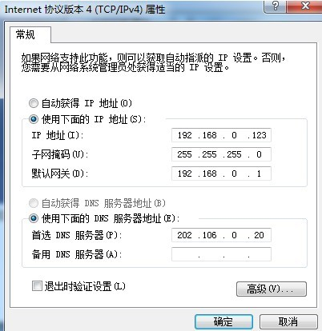
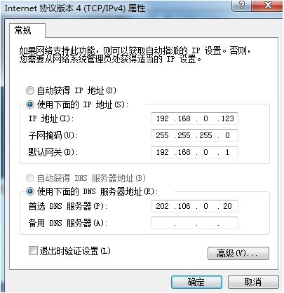
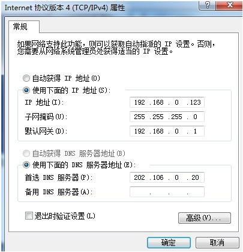
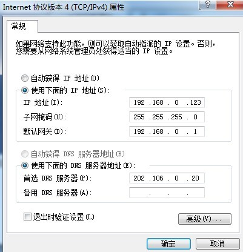

1)线路连接故障
[有分离器]
a.modem到分离器连接故障
请将此线俩头分别拔下并重新插牢，如果还有问题，请检查此段网线是否
已经损坏，是的话考虑重新换根新线
b.分离器到电话连接故障
请将此线俩头分别拔下并重新插牢，如果还有问题，请检查此段网线是否
已经损坏，是的话考虑重新换根新线
c.外线故障
询问相关人员解决
[无分离器]
a. modem到电话连接故障
请将此线俩头分别拔下并重新插牢，如果还有问题，请检查此段网线是否
已经损坏，是的话考虑重新换根新线
b. 外线故障
询问相关人员解决
2)如果连接一切正常,请考虑是否电话故障
a.电话是否安装
请确认电话机是否可以正常使用,如果不能正常使用请检查外线连接询问相
关人员解决
b.电话是否正常
光线用户请确认ONU的PON等,如果过为熄灭状态或LOS等为闪烁状态,请致电10010
3)如果故障依然存在请致电10010!
1)线路连接故障
a.电脑到modem连线故障
请将此线俩头分别拔下并重新插牢，如果还有问题，请检查此段网线是否
已经损坏，是的话考虑重新换根新线
b.连接禁用了
更改适配器配置启用此连接
c.电脑没连上无线网
d.modem电源可能没开
开启modem电源
e.IP地址配置错误(如果您为静态IP)

在此图设置中配置正确的IP地址
2)如果故障依然存在请致电10010!
1)线路连接故障
a.modem电源没开
请打开modem电源
b.modem到路由器网线未插好
请将modem到路由器的网线拔下重新插牢
c.路由器WAN口未插好
请将路由器到modem的线拔下重新插牢
d.modem到路由器的连线损坏
更换新网线
2)如果故障依然存在请致电10010!
1)线路连接故障
[有分离器]
a.modem到分离器连接故障
请将此线俩头分别拔下并重新插牢，如果还有问题，请检查此段网线是否
已经损坏，是的话考虑重新换根新线
b.分离器到电话连接故障
请将此线俩头分别拔下并重新插牢，如果还有问题，请检查此段网线是否
已经损坏，是的话考虑重新换根新线
c.外线故障
询问相关人员解决
[无分离器]
a. modem到电话连接故障
b. 外线故障
2)如果连接一切正常,请考虑是否电话故障
a.电话是否安装
请确认电话机是否可以正常使用,如果不能正常使用请检查外线连接询问相
关人员解决
b.电话是否正常
光线用户请确认ONU的PON等,如果过为熄灭状态或LOS等为闪烁状态,请致 电10010
3)如果故障依然存在请致电10010!
如果您检测中出现上图，那么说明你的网络连接可能出现如下问题
1)线路连接故障
a.电脑网线没插好(如果您为无线上网请检查电脑是否已经连接上无线网)
请将此端网线分别下并重新插牢
b.路由器LAN口连接故障
请将此端网线拔下并重新插牢
c.电脑到路由线路损坏
更换新网线
d.路由器电源未开
请打开路由器电源
e.计算机网关设置有问题（如果您为静态IP）

在此图设置中配置正确的网关
f.IP地址配置错误(如果您为静态IP)

在此图设置中配置正确的IP地址
2)如果故障依然存在请致电10010!
1)电脑网络设置
a.DNS设置错误(如果您非自动获取DNS)
在此图设置中配置正确的DNS
2)如果故障依然存在请致电10010!
1)电脑网络设置
a.DNS设置错误(如果您非自动获取DNS)

在此图设置中配置正确的DNS
2)如果故障依然存在请致电10010!